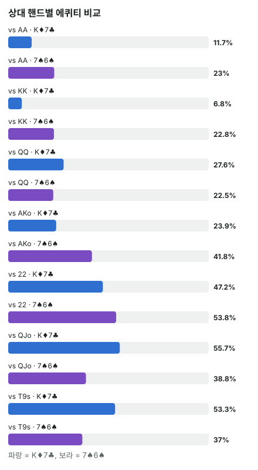

안녕하세요. I05·I06에서 에퀴티는 "끝까지 쇼다운했을 때 우리 평균 몫"이라고 했죠.
그런데 실제 판은 끝까지 그냥 가지 않아요. 중간에 벳이 있고, 우리는 폴드하기도 하죠. 그래서 계산된 에퀴티와 실제로 가져가는 몫은 달라요. 오늘은 계산된 에퀴티가 비슷한 두 핸드를 나란히 놓고, 그 몫이 어디서 나오는지를 뜯어볼 거예요. 그걸 보면 왜 한쪽은 덜 가져가고 한쪽은 더 가져갈 수 있는지가 보여요.
이 글에서 배울 것
- 에퀴티 실현이 무슨 뜻인지, 계산된 에퀴티가 왜 "벳이 하나도 없다"는 가정의 숫자인지
- 같은 에퀴티라도 그 에퀴티가 어디서 나오느냐(약한 핸드를 조금 앞서서인지, 맞았을 때 크게 이겨서인지)에 따라 실현이 달라지는 이유
- 포지션이 계산된 에퀴티는 그대로 두고 실현만 바꾸는 이유, 그리고 실현을 따질 필요가 없는 경우
1단계. 에퀴티 실현이란?
정의 한 줄
에퀴티 실현 = 실제로 가져가는 몫 ÷ 계산된 에퀴티예요.
- 계산된 에퀴티: "아무 벳 없이 리버까지 갔다면" 우리 몫
- 실제 몫: 벳에 밀려 중간에 폴드하거나, 반대로 맞았을 때 더 받아내면서 달라진 몫
실제 몫은 계산된 에퀴티보다 작을 수도, 클 수도 있어요. 그래서 이 비율도 1보다 작을 수도, 클 수도 있어요.
시험 점수로 비유하면
시험의 예상 점수와 실제 점수예요. 실력(계산된 에퀴티)이 같아도, 시간에 쫓기면 아는 문제도 놓치고(덜), 시간을 잘 쓰면 검토까지 해서 더 받기도(더) 하죠.
폴드는 실수가 아니에요
여기서 오해하기 쉬운 것 하나. 중간에 폴드하는 건 실수가 아니에요. 더 낼 돈을 아끼는 선택이에요. 다만 그 판에서 가질 수 있던 몫은 포기하게 돼요. 그 포기한 몫이 쌓이면 "계산보다 덜 가져갔다"가 되는 거예요.
2단계. 두 핸드, 비슷한 에퀴티
같은 CO 오픈 레인지(가정: 22+, A2s+, K9s+, QTs+, JTs, T9s, 98s, ATo+, KJo+, QJo)를 상대로 두 핸드를 계산해 볼게요. CO는 버튼 바로 오른쪽 자리예요.
계산은 몬테카를로로 했어요. 남은 카드를 무작위로 수천 번 깔아 보고 Hero 몫의 평균을 낸 거예요(상대 핸드 조합마다 5,000번).
| Hero 핸드 | 상대 레인지 콤보 | 계산된 에퀴티 |
|---|---|---|
| K♦7♣ | 225콤보 | 약 35.35% |
| 7♠6♠ | 238콤보 | 약 37.47% |
콤보 수가 왜 다를까
같은 레인지인데 콤보 수가 달라요. Hero가 든 카드는 상대가 못 들기 때문이에요.
- K♦7♣: K와 7을 둘 다 줄여요. KK·77이 3콤보, AKs·A7s·K9s~KQs가 3콤보씩, AKo·KJo·KQo가 9콤보씩으로 줄어요. K가 들어간 핸드가 레인지에 많아서 꽤 많이 지워져요
- 7♠6♠: 7과 6만 줄여요. 77·66이 3콤보, A7s·A6s가 3콤보로 줄어요. 레인지에 7·6이 들어간 핸드가 적어서 조금만 지워져요
7을 같이 든 77은 두 핸드 모두에서 줄어든다는 것도 보이죠. 그래서 같은 레인지가 225와 238로 갈려요.
숫자만 보면 두 핸드는 비슷하죠. 그런데 실제로 가져가는 몫은 크게 다를 수 있어요. 왜 그런지는 에퀴티를 상대 핸드별로 쪼개 보면 보여요.
3단계. 에퀴티가 어디서 나오나 — 상대 핸드별로 쪼개기

| 상대 핸드 | K♦7♣ 에퀴티 | 7♠6♠ 에퀴티 |
|---|---|---|
| AA | 약 11.68% | 약 22.95% |
| KK | 약 6.78% | 약 22.81% |
| 약 27.62% | 약 22.47% | |
| AKo | 약 23.92% | 약 41.75% |
| 22 | 약 47.19% | 약 53.82% |
| QJo | 약 55.65% | 약 38.77% |
| T9s | 약 53.30% | 약 36.95% |
K♦7♣: 약한 핸드를 "조금" 앞서서 버는 에퀴티
K♦7♣는 QJo·T9s 같은 핸드 상대로 절반 넘게 가져가요. K가 그 핸드들의 높은 카드보다 높아서, 둘 다 아무것도 안 맞고 쇼다운하면 K 하이가 이기거든요.
반대로 AA·KK에는 거의 못 이겨요. 그런데 AA(약 11.68%)보다 KK(약 6.78%)에 더 낮아요. 왜일까요?
AA 상대로는 보드에 K가 오면 Hero가 K 페어, K와 7이 오면 투페어가 돼서 이길 길이 있어요. 그런데 KK 상대로는 K가 와도 상대가 셋이 될 뿐이에요. Hero의 K가 사실상 죽은 카드가 되는 거죠. 그래서 남는 길은 7 두 장, 스트레이트, 플러시 같은 좁은 길뿐이에요.
이게 무슨 뜻이냐면, K♦7♣의 에퀴티는 상당 부분 "아무도 안 맞았을 때 K 하이로 이기는 몫"에서 나와요.
7♠6♠: 맞았을 때 크게 이겨서 버는 에퀴티
7♠6♠는 AA·KK에도 20% 넘게 가져가요. K♦7♣보다 훨씬 많죠. 스트레이트·플러시·투페어처럼 오버페어를 이기는 핸드를 만들 수 있어서예요.
대신 QJo·T9s 상대로는 K♦7♣보다 덜 가져가요. 둘 다 안 맞으면 7 하이는 Q 하이·T 하이에 지니까요.
7♠6♠의 에퀴티는 "맞았을 때 강한 핸드로 이기는 몫"에서 나와요.
4단계. 같은 에퀴티, 다른 실현
포지션이란
포지션 = 플랍부터 상대보다 나중에 행동하는 것이에요. 상대 행동을 보고 결정할 수 있어서 유리해요.
CO가 오픈하면 Hero가 콜할 수 있는 자리는 버튼(BTN)·SB·BB예요. 버튼에서 콜하면 플랍부터 CO보다 나중에 행동하고(포지션 있음), BB에서 콜하면 먼저 행동해요(포지션 없음).
K♦7♣를 BB에서 콜한다면 → 덜 가져가기 쉬워요
- 끝까지 가야 받는 몫이 많아요. K♦7♣가 버는 "K 하이로 이기는 몫"은 리버까지 아무 일 없이 가야 받을 수 있어요. 그런데 아무것도 안 맞은 K 하이로 상대 벳을 계속 받기는 어려워요
- 맞아도 버티기 어려워요. 플랍에서 K가 맞아도 키커가 7이라, 큰 벳에는 상대가 더 좋은 K일까 봐 버티기 어려워요
- 먼저 행동해요. 체크하면 상대가 벳하고, Hero는 또 결정해야 해요. 폴드하는 판이 생기고, 그 판의 몫은 포기돼요
7♠6♠를 버튼에서 콜한다면 → 더 가져갈 수 있어요
- 스트레이트·플러시 드로우가 생기면 계속 갈 이유가 있어요
- 상대가 오버페어 같은 핸드로 계속 벳한다고 가정하면, 스트레이트처럼 맞았을 때 더 받아낼 수 있어요
- 나중에 행동하니 상대가 체크하면 공짜로 다음 카드를 보거나, 필요할 때만 크게 걸 수 있어요
두 요소를 하나씩 떼어 보면
위 비교는 핸드 모양과 포지션을 동시에 바꿨어요. 그래서 하나씩 떼어 볼게요.
- 같은 7♠6♠를 버튼에서 vs BB에서: 계산된 에퀴티는 똑같이 약 37.47%예요. 그런데 BB에서는 먼저 행동하니 드로우를 싸게 끌고 가기 어렵고, 맞아도 상대 반응을 보기 전에 먼저 정해야 해요. 포지션만으로 실현이 달라져요
- 같은 BB에서 K♦7♣ vs 7♠6♠: 포지션 없는 건 같아요. 그래도 K♦7♣는 "끝까지 가야 받는 몫"이 많고, 7♠6♠는 "맞으면 받아내는 몫"이 많아요. 핸드 모양만으로도 실현이 달라져요
1단계의 비율로 다시 말하면
BB의 K♦7♣는 약 35.35% 중 일부를 폴드로 포기하니, 실현 비율이 1보다 작아지는 쪽이에요. 버튼의 7♠6♠는 맞았을 때 더 받아내니, 비율이 1에 가깝거나 넘을 수도 있는 쪽이고요. 정확한 값은 상대 대응에 따라 달라서 숫자로 정하지 않고, 방향만 봐요.
왜 그럴까: 계산된 에퀴티는 "벳이 없는 세상"의 숫자라서요
계산기는 Hero 자리를 몰라요
2단계의 약 37.47%를 다시 볼게요. 이 숫자는 7♠6♠가 버튼에 앉든 BB에 앉든 똑같아요. 계산기는 보드를 깔고 쇼다운만 하니까, 누가 먼저 행동하는지 모르거든요.
그러니까 포지션은 계산된 에퀴티를 바꾸지 않아요. 실현만 바꿔요. "버튼이 유리하다"는 말은 "버튼에서는 같은 에퀴티를 더 많이 가져간다"는 뜻이에요.
벳이 생기면 "끝까지 가야 받는 몫"부터 사라져요
실제 판에는 벳이 있어요. 벳은 Hero에게 매번 질문을 던져요. "이 핸드로 돈을 더 낼 거야?"
이때 아무것도 안 맞은 K 하이는 대답하기 어려워요. 쇼다운하면 이길 수도 있지만, 지금 보이는 건 하이카드뿐이니까요. 그래서 폴드하는 판이 생기고, 3단계에서 본 "QJo 상대 절반 넘는 몫" 같은 에퀴티가 그 판에서 사라져요.
반대로 맞은 7♠6♠는 대답이 쉬워요. 스트레이트를 들고는 계속 가면 되고, 오히려 상대 벳이 반가워요. 이렇게 강한 핸드로 이기는 몫은 벳이 있어도 살아남고, 벳 덕분에 더 커지기도 해요.
그래서 "어디서 나오는 에퀴티냐"가 중요해요
자주 하는 실수
실수 1. 계산된 에퀴티가 비슷하면 두 핸드를 같게 보기 K♦7♣ 약 35.35%, 7♠6♠ 약 37.47%라서 "비슷한 핸드"라고 생각하기 쉬워요. 하지만 3단계에서 본 것처럼 KK 상대로 하나는 약 6.78%, 하나는 약 22.81%예요. 에퀴티가 나오는 곳이 전혀 달라요. 대신 이렇게 하세요. 에퀴티 숫자 옆에 "이 몫은 쇼다운까지 가야 받나, 맞으면 받아내나?"를 같이 붙여 보세요.
실수 2. "포지션이 있으면 에퀴티가 올라간다" BB에서 7♠6♠를 들고 "버튼에서 이 핸드가 좋다던데" 하며 같은 기준으로 콜하는 경우예요. 숫자(약 37.47%)는 같아도, BB에서는 먼저 행동하니 버튼에서만큼 가져가지 못해요. 자리를 바꾸면 같은 숫자라도 콜 기준을 다시 세우세요.
실수 3. 실현을 핑계로 모자란 계산을 메우기 "맞으면 크게 이기니까"는 실현을 조금 높여 줄 수는 있어요. 하지만 그게 얼마인지는 오늘 숫자로 정할 수 없어요. 계산된 에퀴티가 필요 에퀴티보다 이미 많이 모자라면, 실현으로 그 차이를 다 메운다고 믿는 건 위험해요. 실현은 아슬아슬한 결정의 방향을 정하는 데만 쓰세요.
"에퀴티 실현을 숫자로 계산할 수는 없어요?"
좋은 질문이에요. 계산하려면 상대가 턴·리버에 어떻게 행동할지까지 모두 정해야 해요. 그건 솔버 같은 도구가 하는 일이고, 상황마다 달라요.
상황마다 달라서, 이 글에서는 숫자 대신 오늘 배운 요소들로 "계산보다 좋을까, 나쁠까"의 방향을 판단하는 연습을 해요.
실현을 따질 필요가 없는 경우
두 사람만 남은 올인 콜은 뒤에 결정이 없어요. 아무도 더 벳할 수 없으니 폴드하는 판도, 더 받아내는 판도 없죠. 그래서 계산된 에퀴티가 그대로 실현돼요.
반대로 뒤에 베팅이 남은 결정이라면, 계산 결과는 출발점이에요. "에퀴티가 필요 에퀴티보다 조금 높다"가 나와도, 오늘 본 요소들로 한 번 더 보정해요.
선생님의 한마디
- 계산이 끝나면 "뒤에 베팅이 남았나?"부터 — 올인이면 계산 그대로, 아니면 실현을 따지기
- 내 에퀴티가 어디서 나오는지 보기: 끝까지 가야 받는 몫인가, 맞으면 받아내는 몫인가
- 내가 나중에 행동하나 확인하기 — 포지션이 없으면 한 단계 더 보수적으로
연습 문제
학습툴에는 실현을 계산하는 화면이 없어요. 에퀴티 계산기에 핸드 대 핸드(예: 7♠6♠ 대 K♥K♣)를 넣어 "에퀴티가 어디서 나오는지"를 확인해 보고, 아래 문제로 방향을 판단해 보세요.
문제 1. CO가 오픈했고, Hero는 이번엔 BB에서 9♥8♥로 콜할지 고민 중이에요. 계산된 에퀴티가 필요 에퀴티보다 조금 낮아요. 맞으면 크게 이기는 핸드이니 콜해도 될까요?
정답 보기
조심해야 해요. 9♥8♥는 맞으면 크게 이기는 핸드라 더 가져갈 요소가 있지만, BB는 플랍부터 먼저 행동해서 덜 가져가는 요소도 있어요. 두 요소가 서로 반대 방향이에요. 어느 쪽이 더 클지는 오늘 숫자로 정할 수 없어요. 이럴 때는 판단 순서를 이렇게 잡아요. ① 기본값은 계산(조금 모자람 → 폴드) ② 실현 요소가 한 방향으로 확실히 몰릴 때만 기본값을 뒤집기. 여기서는 몰리지 않으니 폴드 쪽이에요.
문제 2. 세 명이 남았어요. 한 명이 올인했고, Hero와 다른 한 명은 아직 칩이 많이 남았어요. Hero가 콜하면 "계산된 에퀴티가 그대로 실현된다"고 볼 수 있을까요?
정답 보기
아니에요. 올인한 사람과의 메인팟은 끝까지 가지만, 남은 한 명과는 사이드팟에서 계속 베팅할 수 있어요. 뒤에 결정이 남아 있으니, 그 사람의 벳에 밀려 폴드하면 메인팟 몫까지 포기하게 될 수 있어요.
핵심 정리
- 에퀴티 실현 = 실제 몫 ÷ 계산된 에퀴티. 계산된 에퀴티는 "벳이 없는 세상"의 숫자예요
- 같은 에퀴티라도 약한 핸드를 조금 앞서는 몫은 벳에 사라지기 쉽고, 맞았을 때 크게 이기는 몫은 살아남아요
- 포지션은 계산된 에퀴티를 바꾸지 않고 실현만 바꿔요
- 두 사람 올인처럼 뒤에 결정이 없으면 실현을 따질 필요가 없어요
정리하며
오늘은 CO 오픈 레인지 상대로 계산된 에퀴티가 비슷한 K♦7♣와 7♠6♠를 비교했어요. 상대 핸드별로 쪼개 보니, K♦7♣는 약한 핸드를 조금 앞서서, 7♠6♠는 맞았을 때 크게 이겨서 에퀴티를 벌었죠.
벳이 있는 실제 판에서는 앞쪽 몫이 먼저 사라지고, 포지션은 그 실현을 바꿔요. 그래서 계산 결과는 출발점이고, "이 에퀴티를 정말 가져갈 수 있나"가 다음 질문이에요.
다음 글 I32에서는 오늘 표에서 본 콤보 수가 줄어드는 규칙(225와 238이 왜 갈렸는지)을 빠르게 세는 법으로 정리해요. 페어 6→3→1, 다른 두 숫자 16→12→9가 어디서 나오는지 봐요.
AI 작성 · 숫자는 계산 검증 (프리플랍 몬테카를로, 콤보마다 5,000번) · 레인지는 연습용 가정 · 실현 방향은 원칙 설명